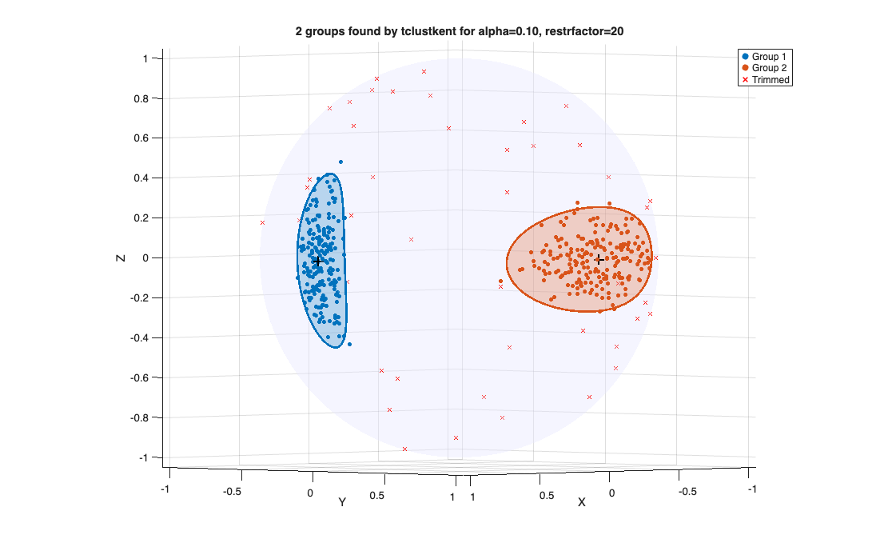

tclustkent
tclustkent computes trimmed clustering for spherical data using mixtures of Kent distribution
Syntax
Description
tclustkent partitions the points in the n-by-3 data matrix Y, where each row is assumed to be a unit vector on the unit sphere S^2 in R^3, into k clusters modelled by Kent (Fisher-Bingham FB5) distributions.
It is the Kent-distribution counterpart of tclustvmf, in exactly the same way that tclustvmf is the vMF counterpart of tclust.
The Kent distribution Kent(kappa,beta,Gamma) on S^2 has density f(x; kappa,beta,Gamma) = (1/c(kappa,beta)) * exp{ kappa*(gamma3'*x) + beta*[(gamma1'*x)^2 - (gamma2'*x)^2] } where:
gamma3 is the mean direction (pole), a unit vector in R^3, gamma1 is the major-axis direction (orthogonal to gamma3), gamma2 is the minor-axis direction (= cross(gamma3,gamma1)), kappa>=0 controls concentration (the vMF parameter), beta>=0 controls ovalness of contours (0 <= beta < kappa/2), c(kappa,beta) is the normalizing constant (see KentlogC).
beta=0 reduces the Kent density to the vMF density with parameter kappa, and setting restrfactor=1 with beta=0 reduces tclustkent to trimmed spherical k-means (like tclustvmf with restrfactor=1).
The Kent distribution is STRICTLY for S^2 (p=3 ambient dimension).
For higher-dimensional spherical data use tclustvmf instead.
Robustness is achieved via the same impartial trimming device used by tclust and tclustvmf: at most n-h observations are left unassigned, where h = fix(n*(1-alpha)). A constraint on max(kappa_j)/min(kappa_j) prevents the classification likelihood from becoming unbounded as a cluster collapses to a point (the vMF/Kent analogue of tclust's eigenvalue restriction). An optional uniform noise component models background contamination uniformly distributed on S^2.
tclustkent on two elliptical groups with uniform contamination.out
=tclustkent(Y,
k,
alpha,
restrfactor)
The noise option: uniform background component.out
=tclustkent(Y,
k,
alpha,
restrfactor,
Name, Value)
Examples
 tclustkent on two elliptical groups with uniform contamination.
tclustkent on two elliptical groups with uniform contamination.
tclustkent on two elliptical groups with uniform contamination.. The two groups are generated from Kent distributions (elliptical caps): the first has pole [1 0 0] and is elongated along [0 0 1], the second has pole [0 1 0] and is elongated along [1 0 0]. 40 units uniformly distributed on the sphere are added. Trimming level is 10 per cent. The 95 per cent confidence regions are drawn.
rng(1)
n1=200; n2=200; nnoise=40;
Y1 = Kentrnd(n1, 100, 40, [1 0 0], [0 0 1]);
Y2 = Kentrnd(n2, 50, 15, [0 1 0], [1 0 0]);
% uniform noise on the sphere (vMF with kappa=0)
Ynoise = vMFrnd(nnoise, [0 0 1], 0);
Y = [Y1; Y2; Ynoise];
out = tclustkent(Y, 2, 0.1, 20, 'plots', 1, 'plottype', 'both');
% Estimated parameters (true values: kappa 100 and 50, beta 40 and 15)
disp(array2table([out.kappaopt out.betaopt], 'VariableNames', {'kappa','beta'}))
disp('Estimated poles'); disp(out.gamma3)
disp('Estimated major axes (defined up to sign)'); disp(out.gamma1) kappa beta
______ ______
115.88 45.74
51.93 16.592
Estimated poles
1.0000 -0.0067 0.0050
0.0250 0.9996 0.0132
Estimated major axes (defined up to sign)
0.0053 0.0499 -0.9987
0.9992 -0.0246 -0.0319

Related Examples
Input Arguments
Output Arguments
More About
References
Kent, J.T. (1982), The Fisher-Bingham distribution on the sphere, J. Roy. Statist. Soc., B, Vol. 44, pp. 71-80.
Mardia, K.V., Barber, S., Burdett, P.M., Kent, J.T. and Hamelryck, T.
(2021), Mixture models for spherical data with applications to protein bioinformatics, arXiv:2104.13140.
Garcia-Escudero, L.A., Gordaliza, A., Matran, C. and Mayo-Iscar, A.
(2008), A General Trimming Approach to Robust Cluster Analysis, Annals of Statistics, Vol. 36, pp. 1324-1345.
(2017), Finding the Number of Groups in Model-Based Clustering via Constrained Likelihoods, J. Computational and Graphical Statistics, Vol. 27, pp. 404-416.
Dong, A. and Melnykov, V. (2024), Contaminated Kent mixture model for clustering non-spherical directional data with heavy tails or scatter, Statistics and Probability Letters, Vol. 208, 110058.
See Also
tclustvmf
|
tclust
|
sphereplot
|
Kentrnd
|
Kentcap
|
logKentpdfFS
|
KentMstepFS
|
restrKentFS
|
KentlogC